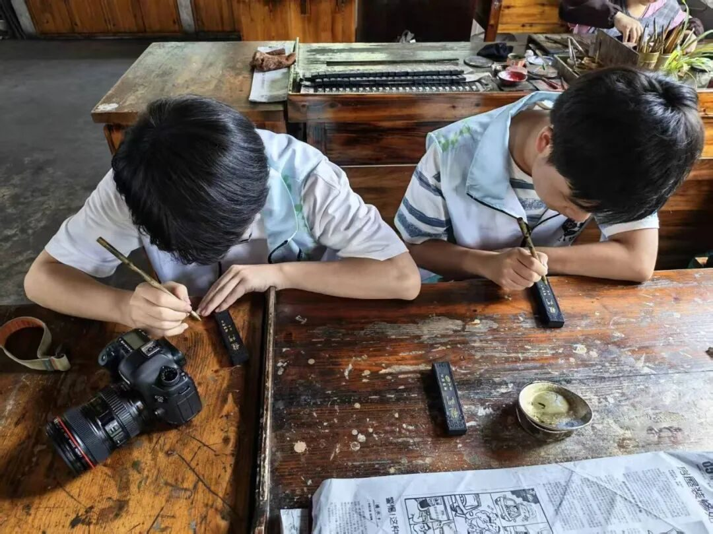
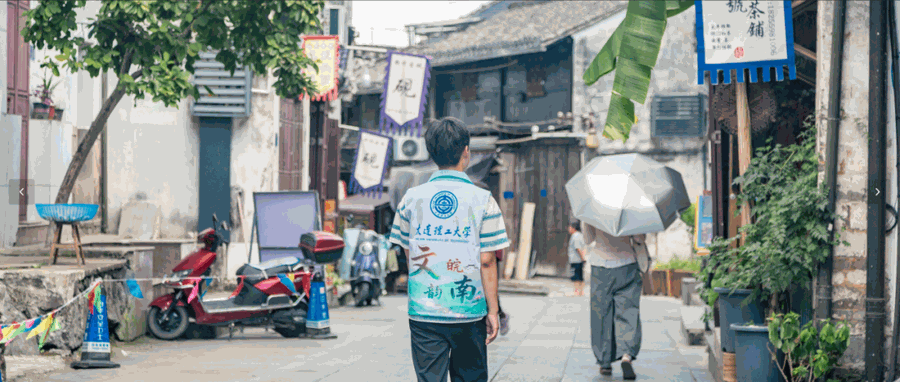
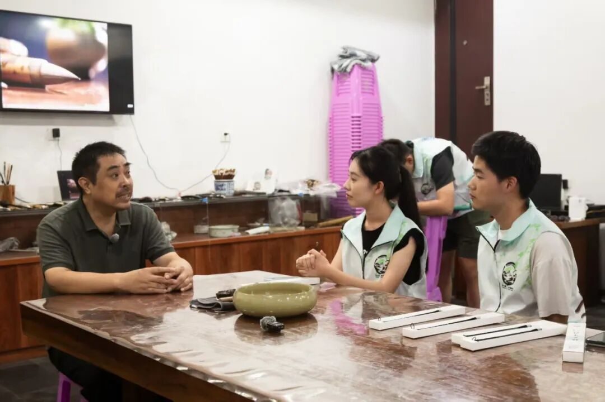
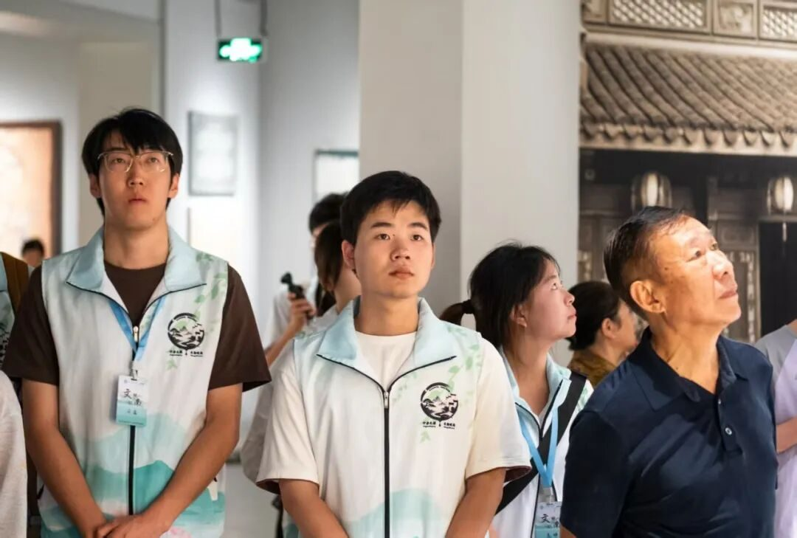
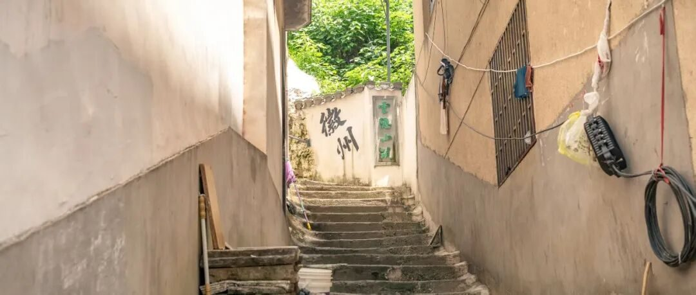

【行者无疆·文韵皖南】个人实践感悟——刘锦程


致第十八期行者无疆
仲夏清风漫过皖南，我跟随行者无疆实践团走进徽州，开启了为期五日的非遗寻访。
往返展馆、手作工坊与古朴村落，站在匠人身边，近距离触摸手艺的温度。这场实地寻访，让我对非遗传承这件事，也生出了许多全新的思考。

在徽州文化博物馆与糕点博物馆，一件件文物实物，向我们铺展开徽州耕读崇文的文化底色。走进休宁石雕工坊，我切身体会石雕创作背后，一凿一刻所需要的十足耐心与心力。
踏入老胡开文墨厂，徽墨、歙砚就在眼前，制墨、描金的一道道繁复工序，让我真切感受到一件手作成品得来不易。奔赴泾县宣纸文化产业园，了解古法捞纸工艺，也看见匠人们直面机械化浪潮，守住古法内核，探索属于传统手艺的生存路径。
在屯溪老街的杨文笔庄，和徽笔传承人杨师傅的交谈，是整趟旅程最触动我的时刻。杨师傅说话从容平和，慢慢跟我们梳理徽笔的起源发展，拆解制笔一道道精细的工序，还细致介绍徽笔的原料取材，讲解评判一支上乘徽笔的各项标准。
同时谈及黄山得天独厚的地理环境，正是这份地域优势，为制笔提供优质原料，滋养推动了徽笔技艺的兴盛。

他还聊起自己女儿所学的专业和传统技艺相关，女儿做学术研究需要真实的手艺实物作为支撑，为此他沉下心打磨，专门做出几支品质上乘的毛笔来配合女儿的研究，也借着这件事，自己更进一步深挖梳理徽笔的历史与文化。
他娓娓道来，言语平淡舒缓，字里行间却流露着手艺人历经岁月沉淀下来的厚重底蕴与内在力量。

XINGZHE
那一刻我真切体会到，匠人们将大半生心血交付一门手艺，他们的人生就像山间缓缓奔流的长河，沉静而富有力量。我们本想前来记录困境、探寻出路，自以为能够带去微光，到头来才发现，我们不过是伫立河畔的访客，反倒被这条岁月长河的宽厚与深沉，温柔地接住、浸润。

除了文房器物，徽州非遗的生命力同样蓬勃生长于乡土烟火之间。实践的最后一日，我们走进瞻淇古村，动手体验鱼灯制作。大批年轻人向外离开，乡土民俗氛围日渐变淡，当地手艺人依旧坚守这份手艺，不断改良鱼灯造型，守护属于这片土地独有的乡愁，也让我看见，非遗从来都扎根在寻常烟火之中。

短短五天的徽州寻访就此落幕，一路看过器物，听过故事，也读懂了藏在手艺背后沉甸甸的坚守。很多此前停留在脑海里的疑问，都在与匠人的对话中慢慢有了答案。我们或许没办法立刻为非遗的发展改变什么，但作为青年学子，我们可以做好忠实的记录者与传播者，把乡土间这份匠心故事讲给更多人听，为古老文脉的延续，贡献属于我们的一点微光。
行者无疆
来源 | 行者无疆实践团
图片 | 行者无疆实践团
文字 | 刘锦程
编辑 | 童思嘉
审核 | 闫 磊
责编 | 邹靓靓 周 亮